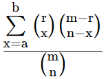
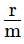
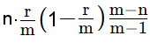

Hypergeometrische Verteilung (Ziehen ohne Zurücklegen)
In einer Urne liegen m≥2 Kugeln; r davon sind rot. Man zieht n Kugeln ohne Zurücklegen.
Dann ist die Wahrscheinlichkeit P*, dass von diesen n Kugeln mindestens a und höchstens b rote Kugeln sind
P*(a ≤ x ≤ b) =

, n ≤ m, b ≤ n, a ≤ b ≤ rErwartungswert μ = n ⋅

, Varianz σ2 =
, Standardweichung σVerteilung m = , r = , n =
μ = , σ2 = ,
σ =
- Gesamtanzahl Kugeln m:
- Anzahl rote Kugeln r:
- Anzahl Züge n:
- Untere Grenze a:
- Obere Grenze b (b≥a):
Resultat
P*(≤X≤) = = 1 :Beispiele
1) m = 45, r = 6, n = 6Wahrscheinlichkeit, 0 bis 2 rote zu ziehen? a = 0, b = 2
W'keit = 0.976166, also ungefähr 97.6 Prozent.
2) Swisslotto: 6 aus 42 Zahlen und 1 von 6 Glückszahlen
Wahrscheinlichkeit P, genau 3 der 6 Zahlen richtig und die Glückszahl falsch zu haben?
Zuerst m = 42, r = 6, n = 6, a = 3, b = 3; Dies ergibt W'keit1 = 0.027222
Dann W'keit2 = 5/6, die Glückszahl falsch zu haben.
P ist W'keit1 · W'keit2, also P = 0.022685
3) Euromillions: 5 aus 50 Zahlen und 2 von 12 Sternen
Wahrscheinlichkeit P, genau 2 der 5 Zahlen und einen der beiden Sterne richtig zu haben?
Zuerst m = 50, r = 5, n = 5, a = 2, b = 2; Dies ergibt W'keit1 = 0.06697314
Dann m = 12, r = 2, n = 2, a = 1, b = 1; Dies ergibt W'keit2 = 0.3030303
P ist W'keit1 · W'keit2, also P = 0.020295
Für die Resultate aller Wahrscheinlichkeiten von Euromillions wählen Sie
W'keiten von Euromillions
Falls Sie die Ziehung der Zahlen und Sterne simulieren wollen, so gehen Sie zu Spiele (Euromillions)
Falls Sie die Ziehung des Swisslottos simulieren wollen, so wählen Sie Spiele (Swisslotto)
Binomialverteilung mit Histogramm
Approximation der Binomialverteilung durch Normalverteilung
©1997 - 2026 www.mathematik.ch |🔍